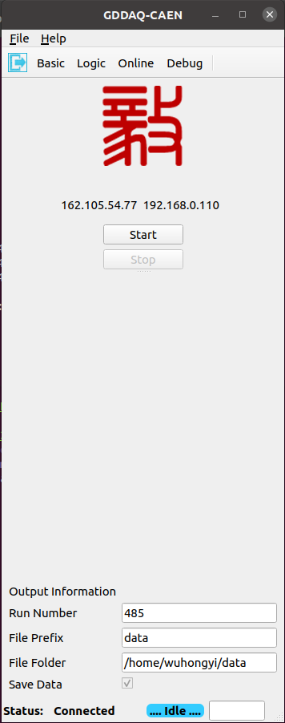
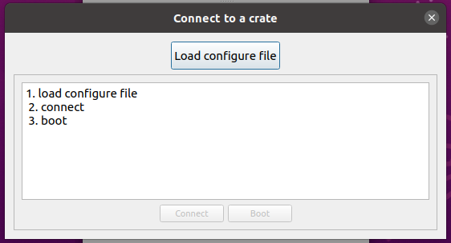
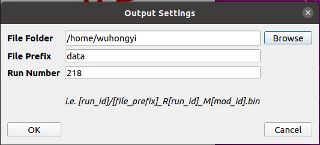
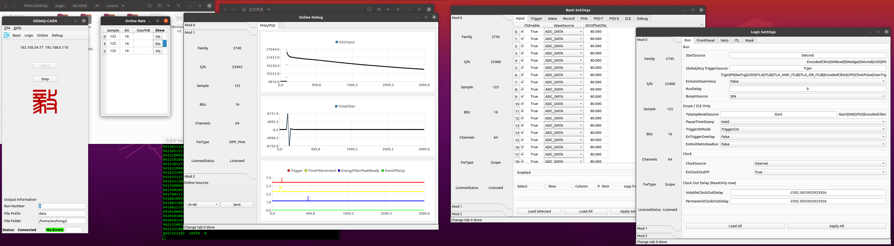
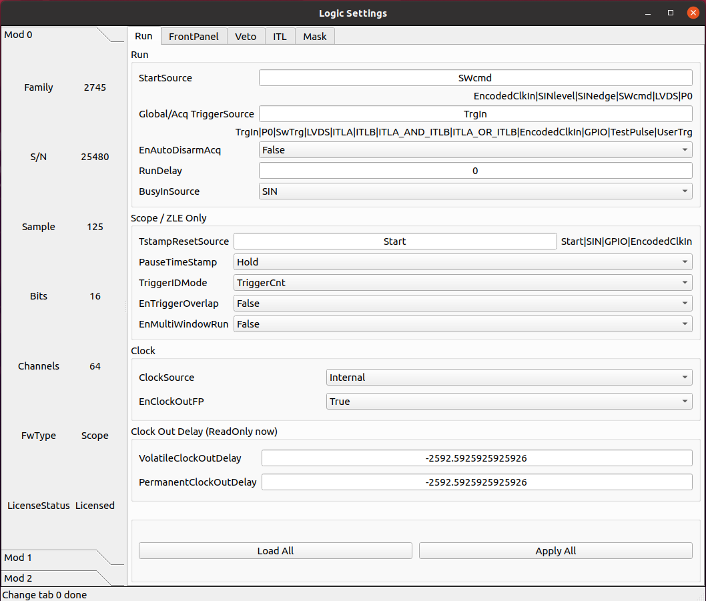

Graphical interactive interface
Configuration file
The configuration file is placed in the pars folder, JSON format file, mainly containing module PID or IP information.
{
"modules": 3,
"connecttype": "eth",
"pid": [25480, 25945, 24946],
"ip": ["162.105.54.162", "162.105.54.187", "162.105.54.90"],
"par": "setting.json",
"userpars": "../pars/init.txt"
}
Among them, the parameter modules is the number of data acquisition modules used by the system, and the parameter connecttype is the connection method between the acquisition modules and the computer, which can be filled in with “usb” or “eth”. Using USB for reading, the maximum limit for a single module is 280 MB/s, while using network for reading, the 1G network has a maximum limit of 110 MB/s. If USB is used for reading, the parameter PID will take effect, which will be the PID of each module in the system in sequence. If network reading is used, the parameter IP takes effect, which is the IPV4 IP of each module in the system.
Enter the GUI directory and execute the following command to pop up the main control interface
./gddaq
# If the following error occurs, set the following environment variables
# ./gddaq: error while loading shared libraries: libCAEN_FELib.so.0: cannot open shared object file: No such file or directory
# export LD_LIBRARY_PATH=/usr/local/lib:$LD_LIBRARY_PATH
login interface
In order to achieve different operation permissions for different login accounts. Reducing the operational permissions of experimental duty personnel has not yet been implemented…

After entering the username (admin) and password (admin), the main control interface will pop up.
Main control interface
Select “connect to device” from the drop-down menu in the upper left corner of the main interface. The following interface will pop up. Click on the file selection box and select the pre configured parameter file.
After the configuration file is loaded, the main configuration information, PID or IP information, will be displayed in the middle of the dialog box. Then click “connect”, and then click “boot”. After completing the progress bar, the pop-up interface will automatically close. All modules in the configuration file have completed initialization.
Select “Output Configure” from the drop-down menu in the upper left corner of the main interface, and the following interface will pop up. This interface is used to set the folder, file name, and run number for outputting data. Press the OK button to close the interface. The above information can only be modified on this interface and displayed on the main interface.
After completing the system initialization, the Basic, Logic, Online, and Debug buttons above the main control interface will float up. Clicking on them will pop up the corresponding sub interface, and clicking again will hide it.
{kind=link}
In the Basic, Logic, Debug sub interfaces that pop up, when the system has multiple modules, switch the acquisition module by clicking on the “Mod 0”, “Mod 1”, “Mod 2” and other switching tags on the left side. When switching, the information on the right page will be automatically read. There are multiple tabs above each sub interface, click on the tab to switch to the corresponding parameter configuration page.
Due to the adaptability of this program to different firmware, different configurable parameters will be displayed in different firmware on the same parameter settings tab.
Basic parameter settings

Logic parameter settings
Real time count rate monitoring

Waveform monitoring and debugging

Online monitoring of web pages
The GUI program occupies port 8765 for online display, which can be accessed by users through IP 8765, and can be accessed locally using 127.0.0.1:8765.
Accessing online monitoring requires logging in, with two users set up: admin and guest. The password for admin is admin, and this account has all access permissions and can perform operations such as clearing spectra at any time. The guest does not have a password and can only view online monitoring information.